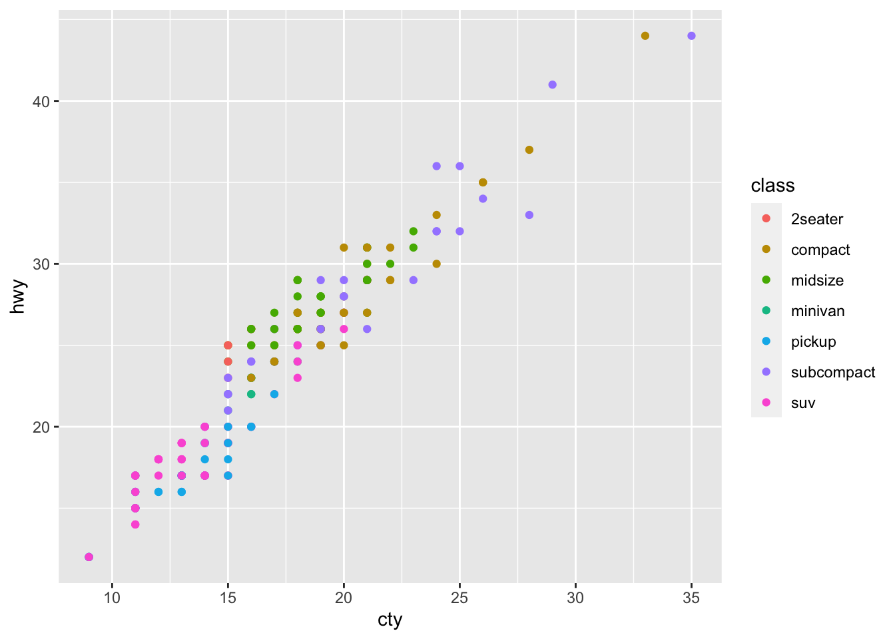

120 + 130[1] 250R allows you to complete calculations, so lets start with that. Type into your markdown or script
Often, you can use R as a calculator, for example, if you want to know what two people’s heights are together you can add them:
120 + 130[1] 250It’s helpful to store these calculations into objects using <- as shown below:
# this # is starting a comment, code that will be ignored but allows you to annotate your work
ant_height <- 120 # this is exactly the same as writing ant_height = 5 + 2, but <- is encouraged in R to avoid confusion with other uses of = (e.g. == operator when you are comparing if two values are identical)
bob_height <- 130
ant_height # to show what the value 120 is now stored in the object "ant_height"[1] 120bob_height # to show what the value 130 is now stored in the object "bob_height"[1] 130This means that you can compare objects to each other later, e.g. how much taller is Bob than Ant:
bob_height - ant_height[1] 10Some advice/rules for Objects (sometimes known as variables in other coding languages):
ant_age <- 35 # at timepoint 1
ant_age # to confirm what the age was at this point[1] 35# wait a year
ant_age <- 36 # at timepoint 1
ant_age # to confirm that the age has been updated[1] 36In a variety of coding languages like R, functions are lines of code you can apply each time you call the function, and apply it to input(s) to get an output. If you wanted to make a function that multiplied two numbers together, it could look something like:
to_the_power_of <- function( # Define your function by stating it's name
input_1, # You can have as many inputs as you like
input_2 #
){
output = input_1 ^ input_2 # creates an output object
return (output) # gives the output back to the user when they run the function
}
to_the_power_of(input_1 = 4, input_2 = 3) # should give you 64[1] 64to_the_power_of(4,3) # should also give you 64[1] 64The great news is that you don’t need to write functions 99% of the time in R, there are a wide variety of functions that are available. Some of which will be used in the next section.
Vectors store a series of values. Often these will be a series of numbers:
heights_vector = c(120,130,135)
heights_vector[1] 120 130 135The “c” above is short for “combine” as you’re combining values together to make this vector. Strings are values that have characters (also known as letters) in them. Lets see if we can make a vector of strings:
names_vector = c("ant", "bob", "charles")
names_vector[1] "ant" "bob" "charles"Looks like we can. But what happens if you mix strings and numbers in a vector:
year_group = c(1, "2a", "2b")
year_group[1] "1" "2a" "2b"R seems to be happy to put them into a single vector. But there are different types of values and vectors, so lets ask R what each type of (using the “typeof” function) vectors we have above:
typeof(heights_vector)[1] "double"typeof(names_vector)[1] "character"typeof(year_group)[1] "character"The numeric vector (“heights”) is a “double” vector. Double refers to the fact that the numbers can include decimals, as opposed to integer numbers which have to be whole numbers. Interestingly, R has assumed the list of numbers should be double rather than integer, which seems like the more robust thing to do, as integer numbers can always be double, but double numbers can’t always be integers. Strings are identified as “character” objects, because they are made of characters.
Data frames look like tables, in which you have a series of columns with headers that describe each column.
Some data frames are already loaded into RStudio when you run it, such as the “mpg” dataframe. To look at it, just type in it’s name (and press CTRL-ENTER on the line, or CTRL-SHIFT-ENTER within the chunk. Note that the below won’t work properly if you write it in the console, you should be running this within an rMarkdown or rNotebook):
# To make a nice looking table in your html output from the "mpg" dataframe from the ggplot2 package:
rmarkdown::paged_table(head(ggplot2::mpg))Note that you may see 2 tables above, but they should be identical if so
The mpg dataframe has information about a variety of cars, their manufacturers, models, as described https://ggplot2.tidyverse.org/reference/mpg.html. You will need to refer to data frames and their columns, the convention for this being to write data frame$column. Lets do this to see what’s in the “manufacturer” column:
ggplot2::mpg$manufacturer [1] "audi" "audi" "audi" "audi" "audi"
[6] "audi" "audi" "audi" "audi" "audi"
[11] "audi" "audi" "audi" "audi" "audi"
[16] "audi" "audi" "audi" "chevrolet" "chevrolet"
[21] "chevrolet" "chevrolet" "chevrolet" "chevrolet" "chevrolet"
[26] "chevrolet" "chevrolet" "chevrolet" "chevrolet" "chevrolet"
[31] "chevrolet" "chevrolet" "chevrolet" "chevrolet" "chevrolet"
[36] "chevrolet" "chevrolet" "dodge" "dodge" "dodge"
[41] "dodge" "dodge" "dodge" "dodge" "dodge"
[46] "dodge" "dodge" "dodge" "dodge" "dodge"
[51] "dodge" "dodge" "dodge" "dodge" "dodge"
[56] "dodge" "dodge" "dodge" "dodge" "dodge"
[61] "dodge" "dodge" "dodge" "dodge" "dodge"
[66] "dodge" "dodge" "dodge" "dodge" "dodge"
[71] "dodge" "dodge" "dodge" "dodge" "ford"
[76] "ford" "ford" "ford" "ford" "ford"
[81] "ford" "ford" "ford" "ford" "ford"
[86] "ford" "ford" "ford" "ford" "ford"
[91] "ford" "ford" "ford" "ford" "ford"
[96] "ford" "ford" "ford" "ford" "honda"
[101] "honda" "honda" "honda" "honda" "honda"
[106] "honda" "honda" "honda" "hyundai" "hyundai"
[111] "hyundai" "hyundai" "hyundai" "hyundai" "hyundai"
[116] "hyundai" "hyundai" "hyundai" "hyundai" "hyundai"
[121] "hyundai" "hyundai" "jeep" "jeep" "jeep"
[126] "jeep" "jeep" "jeep" "jeep" "jeep"
[131] "land rover" "land rover" "land rover" "land rover" "lincoln"
[136] "lincoln" "lincoln" "mercury" "mercury" "mercury"
[141] "mercury" "nissan" "nissan" "nissan" "nissan"
[146] "nissan" "nissan" "nissan" "nissan" "nissan"
[151] "nissan" "nissan" "nissan" "nissan" "pontiac"
[156] "pontiac" "pontiac" "pontiac" "pontiac" "subaru"
[161] "subaru" "subaru" "subaru" "subaru" "subaru"
[166] "subaru" "subaru" "subaru" "subaru" "subaru"
[171] "subaru" "subaru" "subaru" "toyota" "toyota"
[176] "toyota" "toyota" "toyota" "toyota" "toyota"
[181] "toyota" "toyota" "toyota" "toyota" "toyota"
[186] "toyota" "toyota" "toyota" "toyota" "toyota"
[191] "toyota" "toyota" "toyota" "toyota" "toyota"
[196] "toyota" "toyota" "toyota" "toyota" "toyota"
[201] "toyota" "toyota" "toyota" "toyota" "toyota"
[206] "toyota" "toyota" "volkswagen" "volkswagen" "volkswagen"
[211] "volkswagen" "volkswagen" "volkswagen" "volkswagen" "volkswagen"
[216] "volkswagen" "volkswagen" "volkswagen" "volkswagen" "volkswagen"
[221] "volkswagen" "volkswagen" "volkswagen" "volkswagen" "volkswagen"
[226] "volkswagen" "volkswagen" "volkswagen" "volkswagen" "volkswagen"
[231] "volkswagen" "volkswagen" "volkswagen" "volkswagen"Whilst a lot of the functions you will need are in the base code that is active by default, you will at times need extra packages of code to do more powerful things. A commonly used package is ggplot2 [https://ggplot2.tidyverse.org/], which allows you to make beautiful figures in R. To use ggplot2 use need to install it and then load it from the library
if(!require(ggplot2)){install.packages("ggplot2")}Loading required package: ggplot2library(ggplot2)Now that you have a package for making beautiful plots, lets learn about “intelligent copy and paste” to make use of it.
People experienced with coding do not write all their code from memory. They often copy and paste code from the internet and/or from their old scripts. So, assuming you’ve installed and loaded ggplot2 as described above, lets copy and paste code from their website (as of September 2022; https://ggplot2.tidyverse.org/)
ggplot(mpg, aes(displ, hwy, colour = class)) +
geom_point()
Good news is that we have a nice looking figure. But now we need to work out how to understand the code we’ve copied so that you can apply it to your own scripts. There’s a lot to unpack, so making the code more vertical can help you break it down and comment it out. Using the below and a description of the mpg dataframe (https://ggplot2.tidyverse.org/reference/mpg.html), can you comment it out
ggplot( # R will keep looking at your code until all the open brackets have been closed)
mpg, #
aes( #
displ, #
hwy, #
colour = class #
)
) + # R will look to the next line if you end a line with +
geom_point() #
Here’s how I would comment it out:
ggplot(
mpg, # dataframe
aes( # aesthetic properties
displ, # x-axis
hwy, # y-axis
colour = class # which column I will base the color on (often "color" is safer spelling in code)
)
) +
geom_point() # what I would like drawn on (as opposed to boxplots, lines, etc.)
Formatting code like above to be clearer to read is useful when sharing your scripts with other researchers so that they can understand it!
Now to understand the above code, try running it after changing lines. For example, what happens if you change the x-axis:
ggplot(
mpg, # dataframe
aes( # aesthetic properties
cty, # x-axis - updated
hwy, # y-axis
colour = class # which column I will base the color on (often "color" is safer spelling in code)
)
) +
geom_point() # what I would like drawn on (as opposed to boxplots, lines, etc.
To make beautiful figures in R, you can largely google the type of plot you want, copy the example code that the website has, and then swap in the relevant features for your plot. This principle of copying and pasting code, (making it vertical to make it legible is not necessary, but can be helpful), and then editing it to work for your own script is an essential skill to speed up your coding.